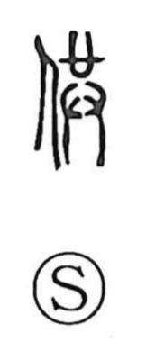

供

Uncategorized
Kun: sonaeru, tomo | On: kyo, ku
to offer ・ to provide ・ to supply
Explanation
供 is a phono-semantic compound. The person radical 亻 marks a human agent, while 共 supplies the on reading kyo and recalls the ancient scene it originally depicted: one respectfully holding the ritual curse-vessel during a ceremony and bowing in reverence to the gods. From this image of presenting something with both hands, the character took on the sense of offering and of preparing or providing what is needed.